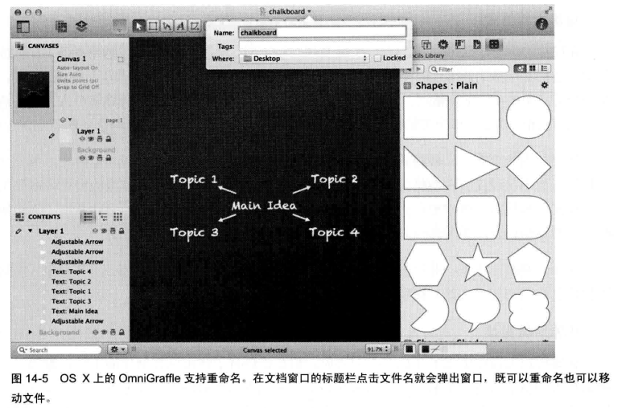

重新思考数据输入、存储与检索
重新思考数据输入
数据完整 vs. 数据免疫
为了避免垃圾数据进入系统，在数据录入时做严格检查，保证数据的完整。这种方法把数据库的需求置于用户需求之前，认为用户是无关紧要的，软件是无所不能的，用户是为软件工作的。
不屏蔽不良数据，而要让系统不受信息不连贯和中断的影响。这种方法需要创造更加聪明、更加先进的程序，能够处理数据置换，让程序具有某种数据免疫力。
我们设计程序时，必须让程序相信，用户输入的是他所希望的。如果用户希望改正，无须程序反复提出改正用户就可以改正。而程序应在其他地方寻求帮助：是否有模块知道如何将字母解释为文本数字？是否有修改历史记录可以解释用户的意图？
处理丢失数据
程序不要为了指出错误阻止用户录入数据，如果有必填字段缺失，可以通过丰富的无模态反馈（rich modeless feedback）告诉用户，而不是停止一切工作。
程序还应该帮助用户校验，程序应该提供不唐突的无模态来反馈录入的工作状态。
多数信息处理系统都能容忍信息缺失，缺失的数据几乎总能通过记录中的其他数据重构出来，实在不行也总能询问交易涉及的各方面来重构。
数据输入的规避机制
策略:让用户做他们想做的，用计算机详细记录下这些动作，这样可以完整地追查责任并可以恢复。
审核与编辑
程序应该清楚地指出可能有问题，不要尝试修正问题；程序应该记住用户的每个动作，保证每个动作能够明确地撤销，不会损失关联信息，让用户弄清楚程序认为问题出在哪里。
重新思考数据存储
用统一文件模型修复数据存储
设计合理的软件应该始终把文档当作一件事来处理，而不是磁盘或内存中的一个副本。这样用户永远不用被迫面对计算机的内部机制，对在磁盘和内存之间写数据的管理是文件系统的工作。
自动保存
自动保存功能不能影响用户界面的响应，保存要么应该是后台进程，要么在用户与程序停止交互时执行。
创建副本
创建副本的操作不应该用对话框打断用户。
命名和重命名
文档的名字应该显示在应用程序的标题栏上，如果用户决定重命名文档，可以单击标题栏直接在标题栏编辑。

在文件系统中存放和移动文档
把文件放在用户能找到的地方。
指定文档的格式
从用户角度看，文档格式————无论它是富文本、纯文本还是word格式，都是文档的特征，而不是磁盘文件的特征，指定文件的格式不应该和保存文件到磁盘的操作关联起来，放在文档属性对话框中更合适。
还原所做更改
放弃所有更改
程序应该有一个明确支持这个动作的功能。另外因为放弃所有更改会丢失重要数据，所以应该有清楚的警告标志来保护用户。
生成一个版本（自动保存副本）
应清楚地告诉用户版本列表，每个版本的统计数据，可以让用户回到任意一个版本。应该有规律地生成版本，以防用户自己没有定时创建版本。
沟通状态
重新考虑数据检索
一个设计良好的检索系统，还可以让用户基于属性搜索文件，还可以让用户按同义词、相关主题或者具体文档的指定属性查找文件。
用户很少能提前表达自己想要什么；其次，即使能表达具体需求，也会经常改变主意。
另一种方法是“受限的自然语言输出”，即程序为用户提供一系列有限控件，让用户从中选择。控件产生自然语言输出，可以让用户直接使用自然语言选择。（看不懂）
P315